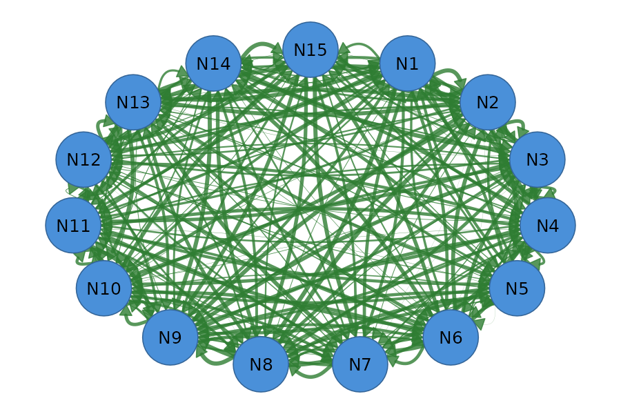
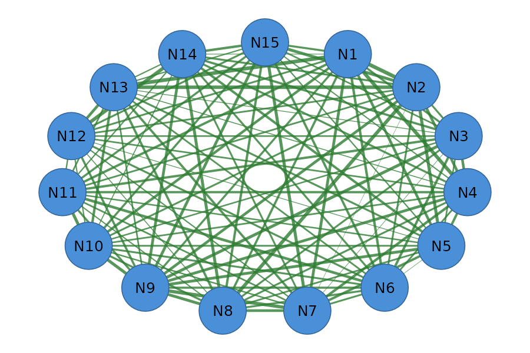
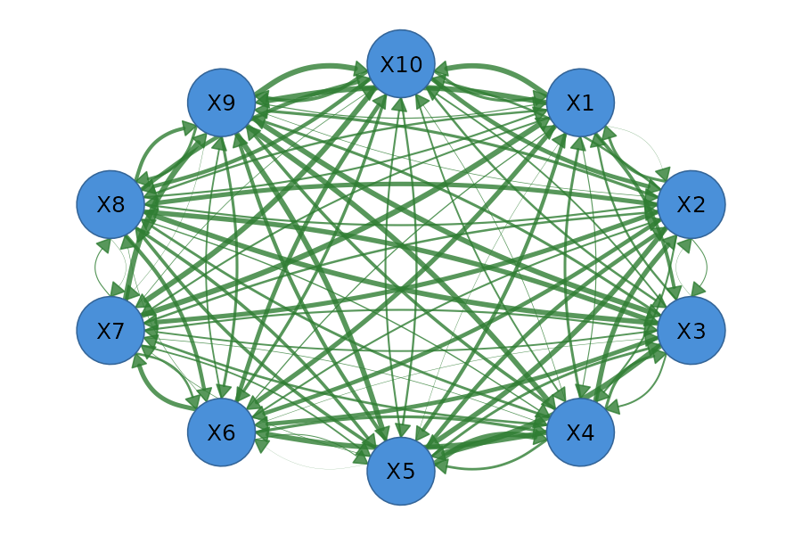

Network Structure and Node Groups
Source:vignettes/network-structure-and-groups.Rmd
network-structure-and-groups.RmdOverview
This tutorial covers:
- The
cograph_networkdata structure - Setting node groups with
set_groups() - Auto-dispatch to specialized plot functions
The cograph_network Structure
When you call as_cograph(), it creates a lightweight S3
object that stores all network data as accessible list elements.
# Create a simple network
mat <- matrix(c(
0.0, 0.5, 0.3, 0.0,
0.5, 0.0, 0.8, 0.2,
0.3, 0.8, 0.0, 0.6,
0.0, 0.2, 0.6, 0.0
), nrow = 4, byrow = TRUE)
rownames(mat) <- colnames(mat) <- c("A", "B", "C", "D")
net <- as_cograph(mat)Accessing Network Data
All data is accessible via $:
# Edge data
net$from # Source node indices
#> NULL
net$to # Target node indices
#> NULL
net$weight # Edge weights
#> A B C D
#> A 0.0 0.5 0.3 0.0
#> B 0.5 0.0 0.8 0.2
#> C 0.3 0.8 0.0 0.6
#> D 0.0 0.2 0.6 0.0
# Network properties
net$n_nodes # Number of nodes
#> NULL
net$n_edges # Number of edges
#> NULL
net$directed # Is directed?
#> [1] FALSE
net$labels # Node labels
#> NULLUsing Getter Functions
For programmatic access, use the getter functions:
get_nodes(net) # Full nodes data frame
#> id label name x y
#> 1 1 A A NA NA
#> 2 2 B B NA NA
#> 3 3 C C NA NA
#> 4 4 D D NA NA
get_edges(net) # Edges as data frame
#> from to weight
#> 1 1 2 0.5
#> 2 1 3 0.3
#> 3 2 3 0.8
#> 4 2 4 0.2
#> 5 3 4 0.6
get_labels(net) # Node labels vector
#> [1] "A" "B" "C" "D"
n_nodes(net) # Node count
#> [1] 4
n_edges(net) # Edge count
#> [1] 5
is_directed(net) # Directedness
#> [1] FALSESetting Node Groups
The set_groups() function assigns nodes to groups. The
type of group determines which specialized plot
function splot() will use:
| Group Type | Column Name | Plot Function | Visualization |
|---|---|---|---|
"layer" |
layer |
plot_mlna() |
Stacked 3D layers |
"cluster" |
cluster |
plot_mtna() |
Clustered shapes |
"group" |
group |
plot_htna() |
Bipartite/polygon |
Method 1: Vector Arguments (Recommended)
The clearest way to set groups:
# Create a larger network for demonstration
set.seed(42)
mat <- matrix(runif(225, 0, 0.4), 15, 15)
diag(mat) <- 0
rownames(mat) <- colnames(mat) <- paste0("N", 1:15)
net <- as_cograph(mat)
# Set layers using vectors
net_layers <- set_groups(net,
nodes = paste0("N", 1:15),
layers = c(rep("Macro", 5), rep("Meso", 5), rep("Micro", 5))
)
# Check the result
get_groups(net_layers)
#> node layer
#> 1 N1 Macro
#> 2 N2 Macro
#> 3 N3 Macro
#> 4 N4 Macro
#> 5 N5 Macro
#> 6 N6 Meso
#> 7 N7 Meso
#> 8 N8 Meso
#> 9 N9 Meso
#> 10 N10 Meso
#> 11 N11 Micro
#> 12 N12 Micro
#> 13 N13 Micro
#> 14 N14 Micro
#> 15 N15 Micro
splot(net_layers)
Multilevel network (layers)
If nodes is omitted, the network’s node order is
used:
# Clusters without specifying nodes
net_clusters <- set_groups(net,
clusters = c("North", "North", "North", "North",
"East", "East", "East",
"South", "South", "South", "South",
"West", "West", "West", "West")
)
splot(net_clusters)
Multi-cluster network
Method 2: Named List
Group nodes by name:
net_groups <- set_groups(net, list(
Input = paste0("N", 1:5),
Processing = paste0("N", 6:10),
Output = paste0("N", 11:15)
), type = "group")
splot(net_groups)
Heterogeneous network (groups)
Method 3: Data Frame
Use a data frame with nodes and
layers/clusters/groups
columns:
# Both singular and plural column names work
df <- data.frame(
nodes = paste0("N", 1:15),
layers = c(rep("Top", 5), rep("Middle", 5), rep("Bottom", 5))
)
net_df <- set_groups(net, df)
get_groups(net_df)
#> node layer
#> 1 N1 Top
#> 2 N2 Top
#> 3 N3 Top
#> 4 N4 Top
#> 5 N5 Top
#> 6 N6 Middle
#> 7 N7 Middle
#> 8 N8 Middle
#> 9 N9 Middle
#> 10 N10 Middle
#> 11 N11 Bottom
#> 12 N12 Bottom
#> 13 N13 Bottom
#> 14 N14 Bottom
#> 15 N15 BottomMethod 4: Community Detection
Automatically detect groups using algorithms:
# Make symmetric for community detection
mat_sym <- (mat + t(mat)) / 2
net_sym <- as_cograph(mat_sym)
# Use Louvain algorithm
net_auto <- set_groups(net_sym, "louvain", type = "group")
get_groups(net_auto)
#> node group
#> 1 N1 1
#> 2 N2 1
#> 3 N3 2
#> 4 N4 1
#> 5 N5 1
#> 6 N6 2
#> 7 N7 3
#> 8 N8 3
#> 9 N9 3
#> 10 N10 2
#> 11 N11 2
#> 12 N12 3
#> 13 N13 1
#> 14 N14 3
#> 15 N15 3
splot(net_auto)
Auto-detected communities
Available algorithms: "louvain",
"walktrap", "fast_greedy",
"label_prop", "infomap",
"leiden"
Validation
set_groups() validates your input:
# Duplicate nodes
try(set_groups(net, nodes = c("N1", "N1", "N2", "N3", "N4"),
layers = c("A", "A", "B", "B", "B")))
#> Error : Duplicate node assignments found: N1
# Unknown nodes
try(set_groups(net, nodes = c("N1", "N2", "N3", "N4", "UNKNOWN"),
layers = c("A", "A", "B", "B", "B")))
#> Error : Nodes not found in network: UNKNOWN
# Missing nodes (not all network nodes assigned)
try(set_groups(net, nodes = c("N1", "N2", "N3"),
layers = c("A", "B", "B")))
#> Error : Nodes missing from group assignment: N4, N5, N6, N7, N8, N9, N10, N11, N12, N13, N14, N15
# Only 1 group (need at least 2)
try(set_groups(net, nodes = paste0("N", 1:15),
layers = rep("Same", 15)))
#> Error : At least 2 groups are required for visualization (found 1)Auto-Dispatch in splot()
When you call splot() on a network with groups, it
automatically dispatches to the appropriate specialized function:
# These are equivalent:
splot(net_layers)
plot_mlna(mat, layer_list = list(Macro = ..., Meso = ..., Micro = ...))
# These are equivalent:
splot(net_clusters)
plot_mtna(mat, cluster_list = list(North = ..., East = ..., ...))
# These are equivalent:
splot(net_groups)
plot_htna(mat, node_list = list(Input = ..., Processing = ..., Output = ...))Complete Example: Pipe Workflow
# Create, configure, and plot in one pipeline
matrix(runif(100, 0, 0.5), 10, 10) |>
{\(m) { diag(m) <- 0; rownames(m) <- colnames(m) <- paste0("X", 1:10); m }}() |>
as_cograph() |>
set_groups(
nodes = paste0("X", 1:10),
layers = c(rep("Input", 3), rep("Hidden", 4), rep("Output", 3))
) |>
splot()
Complete pipe workflow
Summary
| Function | Purpose |
|---|---|
as_cograph() |
Convert matrix/igraph/etc to cograph_network |
set_groups() |
Assign node groupings |
get_groups() |
Retrieve current groupings |
splot() |
Plot (auto-dispatches based on group type) |
| Group Type | Argument | Plot Style |
|---|---|---|
| Layers | layers = ... |
Stacked 3D (mlna) |
| Clusters | clusters = ... |
Shaped clusters (mtna) |
| Groups | type = "group" |
Bipartite/polygon (htna) |